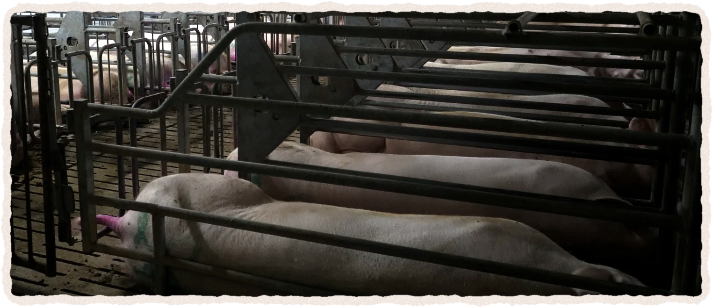
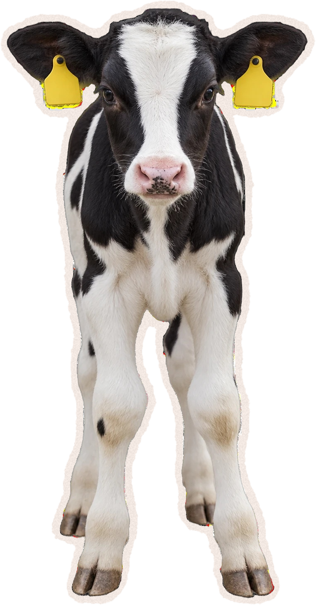
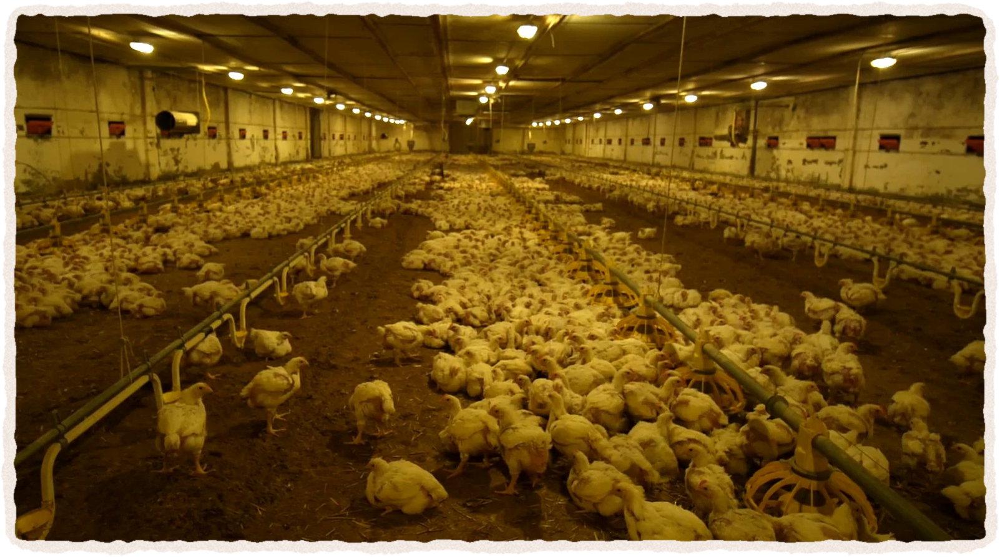
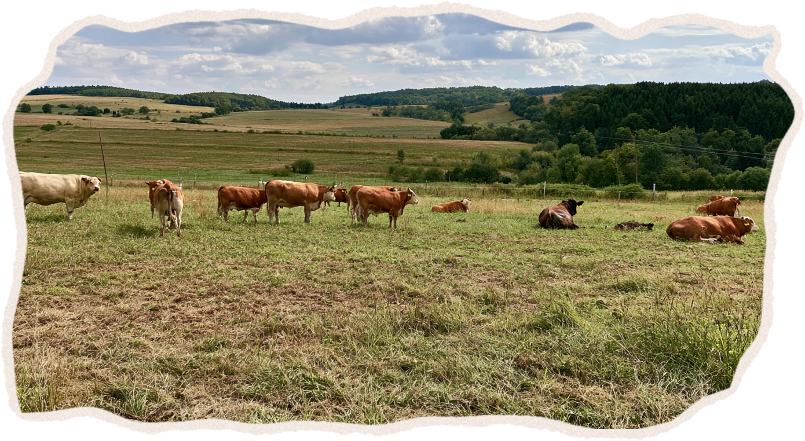
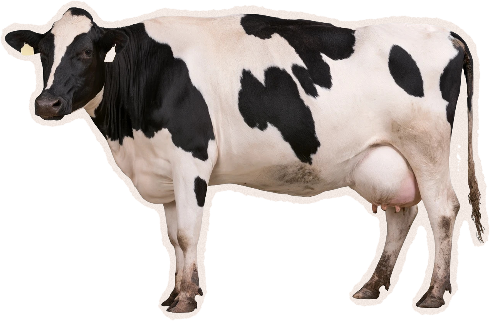
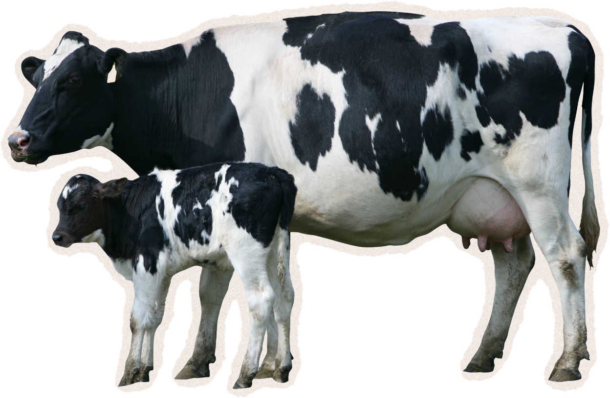

Ilustrační záběr
Krmíme zvířata
jídlem.
A pak máme
jídla míň.
jídlem.
A pak máme
jídla míň.
Fakta, která možná nevíš

Chov zvířat zabírá
8 polí z 10.
Na talíře z nich
ale přijdou necelé 2 z 10.
8 polí z 10.
Na talíře z nich
ale přijdou necelé 2 z 10.
1 pole = 10 % půdy
1 talíř = 10 % jídla
Maso, mléko, vejce a ryby z chovů
8 polí
necelé 2 talíře
Rostlinné jídlo
2 pole
přes 8 talířů
Zdroj: Poore & Nemecek 2018, Science · celý svět · přesně: 83 % zemědělské půdy, 18 % kalorií (a 37 % bílkovin)
Odborněji:maso, mléko, vejce a ryby z chovů
Zabírají 83 % půdy,
tvoří jen 18 % kalorií
a 37 % bílkovin.
tvoří jen 18 % kalorií
a 37 % bílkovin.
živočišné potraviny
rostlinné
zemědělská půda světa
83 %
kalorie v jídle
18 %
bílkoviny v jídle
37 %
Zdroj: Poore & Nemecek 2018, Science · svět, data kolem r. 2010 · ryby jen z chovů
Pro kolik lidí vystačí
100 kg rostlinných bílkovin?
100 kg rostlinných bílkovin?
1 kostička = 10 kg bílkovin
Sníme je sami
Nejdřív je sní prase
zbytek skončí ve výkalech a moči
10 lidí
nanejvýš 3 lidé
Zdroj: Pomar et al. 2021, Frontiers in Veterinary Science – prase uloží do těla jen 15–33 % bílkovin z krmiva (ze 100 kg tedy 15–33 kg). Kostičky jsou zjednodušení.
Česko · obilí spotřebované doma · 2024/25
V Česku jde
víc obilí
zvířatům než lidem.
víc obilí
zvířatům než lidem.
2,27 mil. t
2,06 mil. t
48 %
43 %
krmiva
potraviny
Zdroj: MZe – Situační a výhledová zpráva Obiloviny 2024/2025
Podle novějšího odhadu FAO (2023)
Chov zvířat
= 12 % všech emisí
lidstva.
= 12 % všech emisí
lidstva.
1 čtvereček = 1 % emisí

Ilustrační záběr
včetně pěstování krmiv a zpracování, data z roku 2015
Dřív se uvádělo 14,5 % (FAO 2013, data z roku 2005). Nový odhad je nižší hlavně kvůli novějším metodám výpočtu.
Zdroj: FAO 2023, Pathways towards lower emissions (model GLEAM), str. 39–40
Chov tzv. skotu
pro maso i mléko
= 62 % emisí
z chovu zvířat.
pro maso i mléko
= 62 % emisí
z chovu zvířat.

Ilustrační záběr

maso
mléko
Zdroj: FAO 2023, Pathways towards lower emissions (model GLEAM) – tzv. skot 3,8 Gt CO₂e ročně, data z roku 2015
I ten „nejšetrnější“
chov zvířat
má obvykle větší dopad
než rostlinné alternativy.
chov zvířat
má obvykle větší dopad
než rostlinné alternativy.
„Nejšetrnější“
chov
chov
Rostlinné
alternativy
alternativy
Zdroj: Poore & Nemecek 2018, Science · data z 38 700 farem
Strava veganů:
čtvrtina emisí
a čtvrtina půdy.
čtvrtina emisí
a čtvrtina půdy.
100 g masa a víc denně
vegani
100 %
25 %
100 %
25 %
emise
půda
Zdroj: Scarborough et al. 2023, Nature Food · britská studie, 55 504 lidí
Rostlinná strava:
lehčí pro planetu
i pro zvířata.
lehčí pro planetu
i pro zvířata.

www.kolektivprozvirata.cz
Zdroje najdeš v popisku.